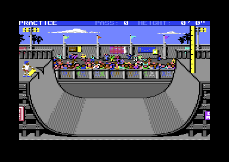

<meta charset="utf-8">
<meta name="viewport" content="width=device-width, initial-scale=1">
<title>Skate or Die!</title>
<link rel="preconnect" href="https://fonts.googleapis.com">
<link rel="stylesheet" href="https://fonts.googleapis.com/css2?family=Lato:wght@400;700;900&family=IBM+Plex+Mono:wght@400;500&display=swap">
<link rel="stylesheet" href="reference/sod-page.css">
<!-- tabs -->
<header class="hero">
  <p class="eyebrow">Commodore 64 · 1987 · Electronic Arts</p>
  <h1>Skate or Die!</h1>
  <p class="sub">High Jump, from the code: a half-pipe that is really a line, speed that comes from waggling the stick, and a height that belongs to one pass.</p>
</header>
<main class="wrap" data-part="highjump">
<section id="event">
  <p class="fig">01 · The event</p>
  <h2 class="t">Go fast to get high</h2>
  <p>The manual calls High Jump a "sheer guts event". The skater drops into a half-pipe and builds speed, and "you get a maximum of five passes on the <i>right</i> side where the height marker is. ... To actually go for it and record the attempt, click the button <i>at the highest point</i> of your jump."<sup class="fn"><a href="about.html#src-1" title="The manual">1</a></sup> The marker is the yellow pole at the top right with its black scale, and the status line at the top keeps count of the passes and the height.</p>
  <figure class="sod-shot"><figcaption>High Jump in practice, the skater waiting on the left platform. Captured in an emulator from the copy studied here.</figcaption></figure>
  <p>On the platform the skater fidgets until fire is pressed (<code>$0D50</code>), then pushes off and drops in. The game runs the event as a chain of phases, one routine for each, chosen through a table of nine (<code>$2AB9</code>): waiting, on the ramp, in the air, falling, the two halves of the trick, the return to the platform and the final pose.</p>
</section>
<section id="ramp">
  <p class="fig">02 · The ramp</p>
  <h2 class="t">A half-pipe that is one line</h2>
  <p class="lede">The skater never moves freely around the screen. Its position is a single number, from 0 on the left wall to 546 on the right, and a table turns that number into a place on the ramp (<code>$12A0</code>).</p>
  <div class="plate">
    <canvas id="path" class="scr" style="max-width:728px"></canvas>
    <p class="cap">The 274 points of the profile table at <code>$2ACB</code>, drawn in the game's own ramp coordinates (y grows downwards). The right half is the left half again, read backwards (<code>$12A0</code>). The dashed line is the coping, y 150 (<code>$1AB4</code>); everything above it is air, and the skater gets there by going up the same column the wall makes.</p>
  </div>
  <p>The first 109 entries are a straight column at x 42: the vertical part of the wall, then the air above the coping. A jump is not a separate piece of physics: the skater simply keeps going up the column, and a position below 0 carries on above the top of the table (<code>$12E6</code>). Gravity comes from the same table. Each frame the skater's speed changes by the difference in height between its point and the point sixteen entries ahead, and in the air by a fixed 16 (<code>$147E</code>). Each frame the speed also loses 1/256 of itself (<code>$16C3</code>), so a skater who does nothing slowly comes to rest.</p>
</section>
<section id="pump">
  <p class="fig">03 · Pumping</p>
  <h2 class="t">Any direction, as fast as you can</h2>
  <p>While the skater is low in the ramp, the game watches the joystick for a newly pressed direction (<code>$16E3</code>). Each one restarts a burst of ten frames that adds to the speed: 6, 6, 6, 6, 6, 6, 4, 3, 2 and 1 (<code>$2DBD</code>). The faster the skater already goes, the more of the burst is cut off from the front, so pumping gives less and less. Only new presses count, and the direction does not matter: in the 6502 simulator, tapping one direction every second frame went as high as alternating left and right at the same rate, and tapping half as often reached about three quarters of the height. The manual's advice to "move the controller rapidly in any direction" is exactly what the code wants.<sup class="fn"><a href="about.html#src-1" title="The manual">1</a></sup></p>
  <table class="t">
    <tr><th>Pass</th><th>Height recorded</th><th>Shown as</th></tr>
    <tr><td>1</td><td>47 eighths of a foot</td><td>5' 11"</td></tr>
    <tr><td>2</td><td>75 eighths</td><td>9' 5"</td></tr>
    <tr><td>3</td><td>95 eighths</td><td>11' 11"</td></tr>
  </table>
  <p class="cap">Three passes in an emulator, the stick pressed right and left every two frames and fire never pressed. Each pass's height was cleared when the next began.</p>
</section>
<section id="height">
  <p class="fig">04 · Height</p>
  <h2 class="t">Eighths of a foot, rounded up</h2>
  <p>The height is kept in eighths of a foot: each frame the game takes the distance of the skater above the coping, adds any trick bonus, and keeps it if it is the most so far (<code>$1AB4</code>). The display shows the feet, then picks the inches from a table for the eighths: 0, 2, 3, 5, 6, 8, 9 or 11 (<code>$2DF1</code>). An eighth of a foot is an inch and a half, so the game rounds every half inch up, and 11 feet 10.5 inches shows as 11' 11".</p>
  <div class="plate">
    <div class="row"><span class="note">Height in eighths</span> <input type="range" id="h" min="0" max="160" value="95" style="max-width:360px"> <b id="hv"></b></div>
    <div class="out" id="hd"></div>
    <p class="cap">The status line's height for each value of <code>$2B</code>, worked out as <code>$17B4</code> does it, and the figure <code>$1ABC</code> keeps. A value of 150 or more is taken as zero, so the most a pass can record is 149 eighths, 18' 8" on screen.</p>
  </div>
  <p>The height belongs to one pass, not to the attempt. It is cleared when the skater starts a new pass after crossing the middle of the ramp (<code>$1798</code>), and when the skater falls (<code>$163E</code>). What is kept is the height of the pass that ended the attempt: the fifth pass on the right, or the pass on which fire was pressed. A skater who goes 12 feet on the third pass and then 8 on the fifth leaves with 8.</p>
</section>
<section id="fire">
  <p class="fig">05 · The jump</p>
  <h2 class="t">Fire at the top, and a half-foot tweak</h2>
  <p>Fire only counts in the air above the right wall, and only while the skater holds one of two poses (<code>$0F4B</code>). It starts a trick of seven poses. The trick adds four eighths, half a foot, to the height (<code>$104D</code>), the manual's "your tweek will add a few inches",<sup class="fn"><a href="about.html#src-1" title="The manual">1</a></sup> and it locks the controls, so this pass is the one that counts (<code>$108F</code>). The bonus arrives only when the second half of the trick begins (phase <code>$0A</code>), and it counts only if the skater's height plus half a foot then beats the best of the pass (<code>$1AB4</code>). By then the skater may already be on the way down: in an emulator, fire at the top of a 95-eighths pass left 95. Whether pressing fire a little before the top gains the bonus was not tested.</p>
  <p>Holding fire for twenty frames or more makes the skater spin in the air (<code>$107D</code>). Coming down to the coping in the middle of the trick, or landing in a pose that is not upright, is a fall (<code>$100D</code>, <code>$0F21</code>): a landing is clean only when the low three bits of the pose number are 0, 1 or 7. A fall clears the height, which is how a pass can show a good figure in the air and end at 0' 0".</p>
  <p>Five passes on the right lock the controls on their own (<code>$1AF4</code>). After that the skater rides back to the left platform, and the game picks one of three final poses by height: one under ten feet, one under thirteen, and one for anything higher (<code>$10F0</code>). Fire on the final pose hands the result to the resident part of the game, as feet and inches in BCD and as the raw eighths (<code>$1A49</code>), and in practice that brings up PRACTICE AGAIN?.</p>
</section>
<section id="controls">
  <p class="fig">06 · Controls</p>
  <h2 class="t">Either joystick, or the keyboard</h2>
  <p>The game reads both joystick ports at once and combines them (<code>$0D23</code>). One row of the keyboard shares its wires with joystick 1, so SPACE fires, 1 is up, the left arrow is down, CTRL is left and 2 is right.</p>
  <table class="t">
    <tr><th>Key</th><th>Effect</th><th>Where</th></tr>
    <tr><td>Commodore key</td><td>sound off, or on again; the music restarts from its first phrase</td><td><code>$1A24</code></td></tr>
    <tr><td>RUN/STOP</td><td>ends the event and goes back to Rodney's skate shop</td><td><code>$1A08</code></td></tr>
  </table>
  <p class="cap">Both tested in an emulator. The two keys are read in the interrupt at the bottom of the screen (<code>$0B36</code>).</p>
</section>
</main>
<script src="../../lib/c64.js"></script>
<script src="reference/sod-page.js"></script>
<script>
(async function () {
  let G; try { G = await SOD.load(); } catch (e) { SOD.fail(e); return; }
  const M = G.ram, cv = document.getElementById('path'), s = 2;
  const P = []; for (let i = 0; i < 274; i++) P.push([M[0x2ACB + 2 * i], M[0x2ACC + 2 * i]]);
  const ctx = C64.canvas(cv, 364 * s, 200 * s);
  ctx.fillStyle = '#1b1d22'; ctx.fillRect(0, 0, cv.width, cv.height);
  const Y = y => (y - 50) * s, X = x => x * s;
  ctx.strokeStyle = '#ffd400'; ctx.setLineDash([6, 6]); ctx.beginPath(); ctx.moveTo(0, Y(150)); ctx.lineTo(cv.width, Y(150)); ctx.stroke(); ctx.setLineDash([]);
  ctx.fillStyle = '#ffd400'; ctx.font = (11 * s / 2 + 4) + 'px IBM Plex Mono, monospace'; ctx.fillText('coping, y 150', X(200), Y(146));
  const dot = (x, y, c) => { ctx.fillStyle = c; ctx.fillRect(X(x) - 1, Y(y) - 1, 3, 3); };
  P.forEach(([x, y], i) => { const c = y < 150 ? '#75cec8' : '#e9e7e1'; dot(x, y, c); dot(364 - x, y, c); });
  ctx.fillStyle = '#b2b2b2'; ctx.fillText('s = 0', X(48), Y(66)); ctx.fillText('s = 546', X(270), Y(66)); ctx.fillText('s = 273', X(165), Y(234));
  const inch = []; for (let i = 0; i < 8; i++) inch.push(String.fromCharCode(M[0x2DF1 + 2 * i], M[0x2DF2 + 2 * i]));
  const h = document.getElementById('h');
  function show() {
    const v = +h.value, k = v >= 150 ? 0 : v;
    document.getElementById('hv').textContent = v + (v >= 150 ? ' (kept as 0)' : '');
    document.getElementById('hd').textContent = 'HEIGHT: ' + Math.floor(k / 8) + "'" + inch[k & 7] + '"   (' + (k / 8).toFixed(3) + ' ft)';
  }
  h.oninput = show; show();
})();
</script>
